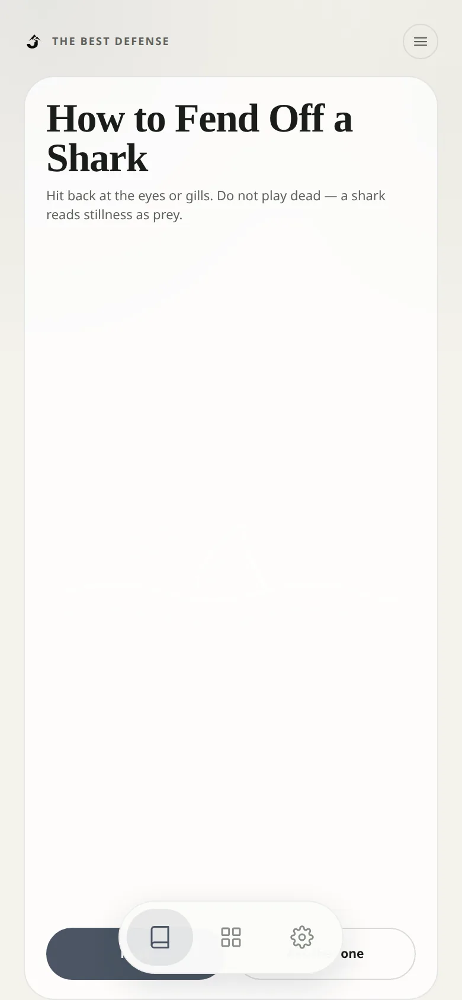

The useful part, kept close.
Just in Case turns a shelf of survival advice into one quiet card a day on an Android home screen.
A daily how-to on your home screen.
One entry a day, in the widget, the morning notification and the Today screen.
Forty how-tos, five chapters, each illustrated. Tap one for the steps.
One honest credit.
The material is based on The Worst-Case Scenario Survival Handbook (1999) by Joshua Piven and David Borgenicht.
A personal project, not affiliated with the authors or the publisher. No passages from the book are quoted on this site.
Picked once, shown everywhere.
The phone picks the day’s entry; every surface reads that one choice. Nothing repeats until all forty have been shown.


Curiosity, not a course.
Techniques from a 1999 book, for curiosity, not training. If something is happening now, call the people whose job it is.